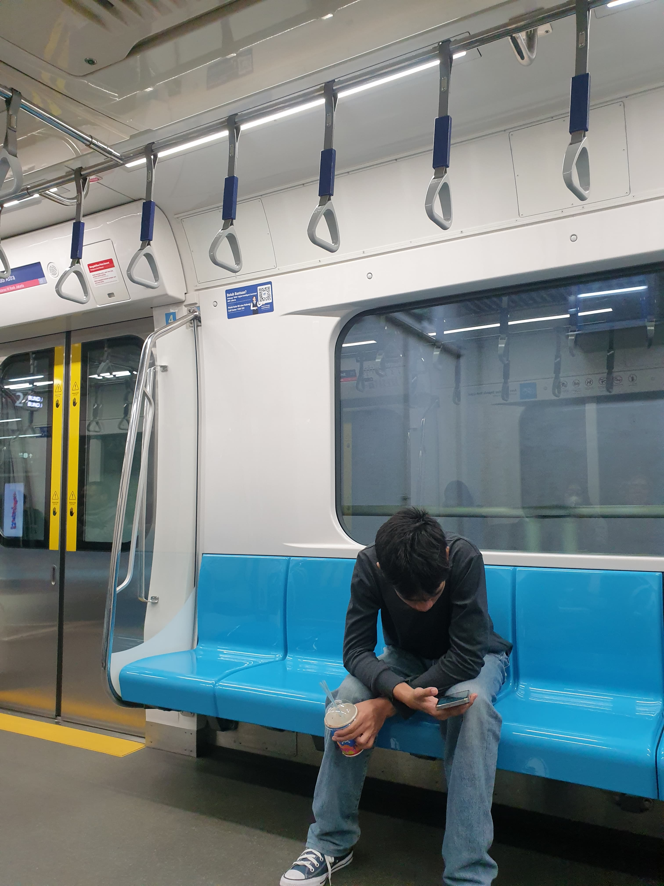

Siswa SMA dengan ketertarikan mendalam pada dunia Informatika dan Desain Grafis. Wadah untuk bereksplorasi, membagikan karya visual, serta menuangkan ide kreatif seputar teknologi.

Halo, Selamat Datang!
Saya Arif, seorang siswa SMA dengan ketertarikan mendalam pada dunia Informatika & Desain Grafis.
Blog ini adalah wadah tempat saya bereksplorasi, membagikan karya visual, serta menuangkan ide-ide kreatif seputar teknologi.
Terima kasih sudah mampir, dan semoga Anda menikmati setiap tulisan serta karya di sini!
About me
Jelajahi
Setiap bab menyimpan cerita, karya, dan perjalanan dalam bentuk visual yang bisa dibalik.